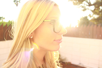

About Me

I'm Kelli, I consider myself a curious person who embraces change.
I feel most fulfilled in creative spaces and love challenges that
require me to dabble into different things.
After obtaining my BA in Film Production I started my career working on various
TV and film sets in LA. Though I enjoyed film, I quickly realized that it was not
my passion, so after 3 short years in the industry I decided it was time to move on.
However, I was not leaving empty handed, I was leaving an industry which had exposed me to an array of different people,
from all over the world. Unknowingly, these experience and interactions would be the
catalyst for my curiousity in seeing the world. After my departrure, I booked a
solo trip to Thailand and fell in love with the whole experience. Coming home from that trip I
decided to dedicate the next few years to seeing as much of the world as I could.
After accepting a job in the Middle East, I relocated and spent the next three years traveling
to as many as 80 different countries. During this time I also started a holistic
health e-commerce site to further perpetuate my nomad lifestyle. Starting this company is where I got my first
real glimpse at the digital world, I cut my teeth on digital marketing and some light coding.
I quickly found that I really enjoyed the coding and web design aspects of running my website and this is where I find myself today, learnig a new skill set to
move into a field I'm excited about.